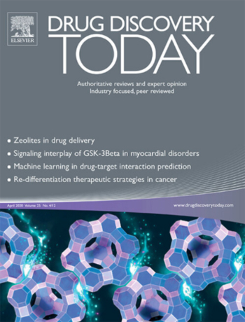

I have been following the research into deuterated polyunsaturated fatty acids for many years and have great hopes for the idea of making cellular membranes ‘fireproof’ against ROS.
DEUTERIUM DIET

Could including deuterated fatty acids in our diets one day help us to lead healthier and longer lives with reduced risk of neurodegenerative diseases, asks Vadim Demidov
In the mid-2000s, Oxford University scientist Mikhail Shchepinov had the novel idea to use non-radioactive heavy isotopes to slow down ageing. His idea revolved around the slowing of free radical damage in the body caused by reactive oxygen species (ROS), one of the principal causes of ageing and ageassociated diseases. ROS oxidise and damage cellular substrates via hydrogen-atom transfer (HAT) reactions. However, isotopic substitution can substantially slow the rate of a chemical transformation, via the kinetic isotope effect (KIE). The heavy hydrogen isotope deuterium (2H or D) makes stronger bonds with carbon and other atoms than the lighter normal hydrogen atom (1H or just H). The rates of simple hydrogen atom transfer (HAT) reactions should typically slow six- to ten-fold when hydrogen is replaced by its nonradioactive isotope deuterium. Substituting hydrogen with heavier tritium (3H or T) should slow these reactions even more, because it is three times heavier. But tritium is unstable and highly radioactive, therefore being harmful to human tissues. Deuteriation of a few selected sites on the ROS-targeted biomolecules in our bodies might therefore lead to resistance to ROS attacks that cause ageing, Shchepinov reasoned.
Importantly, such an ‘isotopic swap’ will not fundamentally change these compounds – their bonding structure will be identical, and their chemical properties will be broadly unaltered. Even the size and the shape of deuterated molecules will not change since a deuterium atom has roughly the same diameter as hydrogen and they both form covalent bonds of the same length with other atoms. However, deuterium will be tougher to remove.
Article Title
Shchepinov filed a patent application for his potential anti-ageing invention and in 2006, together with biotech entrepreneurs Robert Molinari and Charles Cantor, he founded California-based pharma start-up Retrotope. The first thing the new company had to do was to prove the principle that isotopic substitution can extend longevity. To get some initial evidence, Shchepinov worked with collaborators to grow the roundworms Caenorhabditis elegans on isotopically enriched food to see if this increased their lifespan.
Article Title
Shchepinov filed a patent application for his potential anti-ageing invention and in 2006, together with biotech entrepreneurs Robert Molinari and Charles Cantor, he founded California-based pharma start-up Retrotope. The first thing the new company had to do was to prove the principle that isotopic substitution can extend longevity. To get some initial evidence, Shchepinov worked with collaborators to grow the roundworms Caenorhabditis elegans on isotopically enriched food to see if this increased their lifespan. These tiny non-parasitic nematodes are often used as model organisms in biomedical studies. A thorough study published in 2019 indeed found that deuterium supplementation resulted in up to 15% extension in the worm’s lifetime.2 This study also proved that the increase in lifespan on deuterated food was due to a decreased accumulation of harmful ROS as the worms aged and, hence, to reduced oxidative stress.
List example:
- A research report from Stanford University also revealed significant extension of lifespan
- In yeast through uptake of either deuterated glucose or heavy water (D2O).3 If similar effects happened in humans
- These findings suggest that comparable deuterium supplementation could add several years to our lives.
- Thus, Shchepinov’s theories about eating heavy isotopes for long and healthy living have been verified in studies on primitive animals and lower eukaryotes. Next, Retrotope was interested to extend these studies to higher animals and humans, then to age-related illnesses and other conditions.
List example:
- A research report from Stanford University also revealed significant extension of lifespan
- In yeast through uptake of either deuterated glucose or heavy water (D2O).3 If similar effects happened in humans
- These findings suggest that comparable deuterium supplementation could add several years to our lives.
- Thus, Shchepinov’s theories about eating heavy isotopes for long and healthy living have been verified in studies on primitive animals and lower eukaryotes. Next, Retrotope was interested to extend these studies to higher animals and humans, then to age-related illnesses and other conditions.